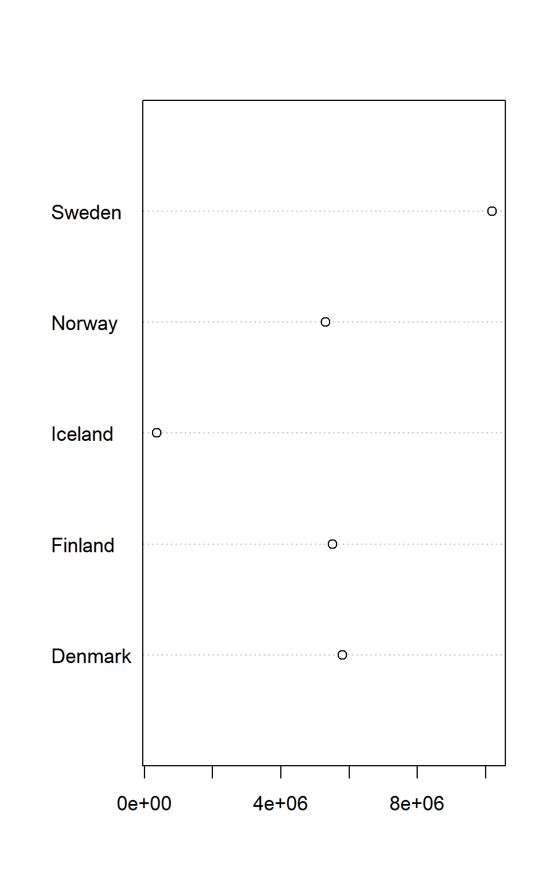
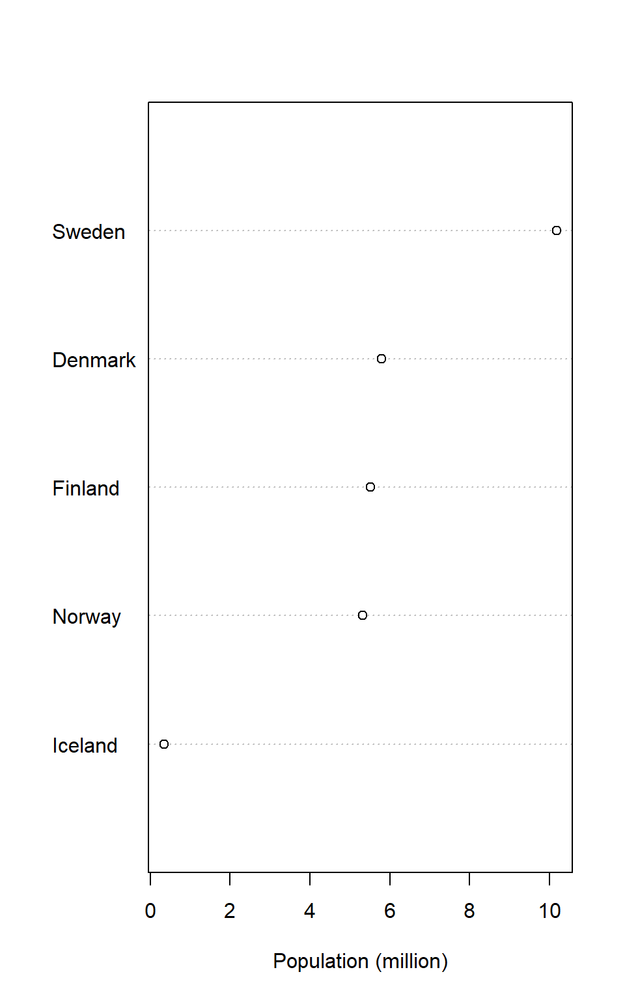
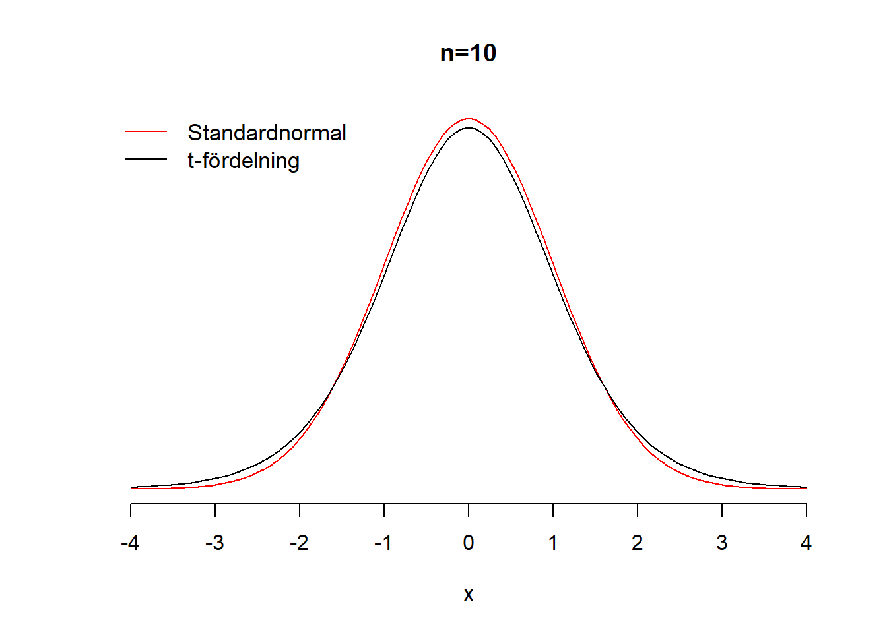
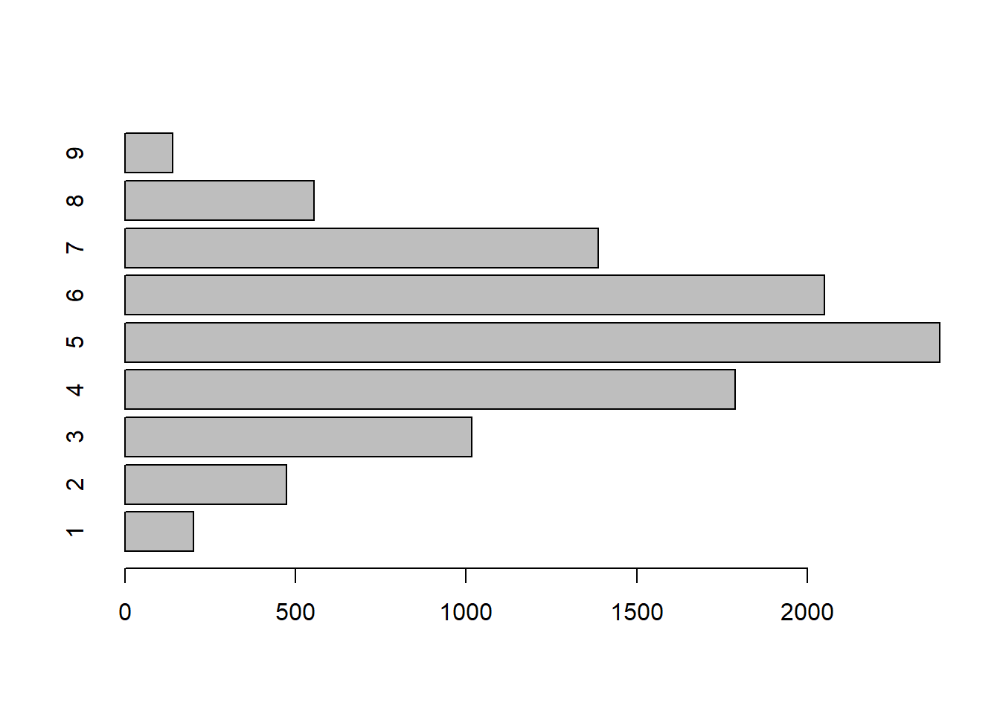
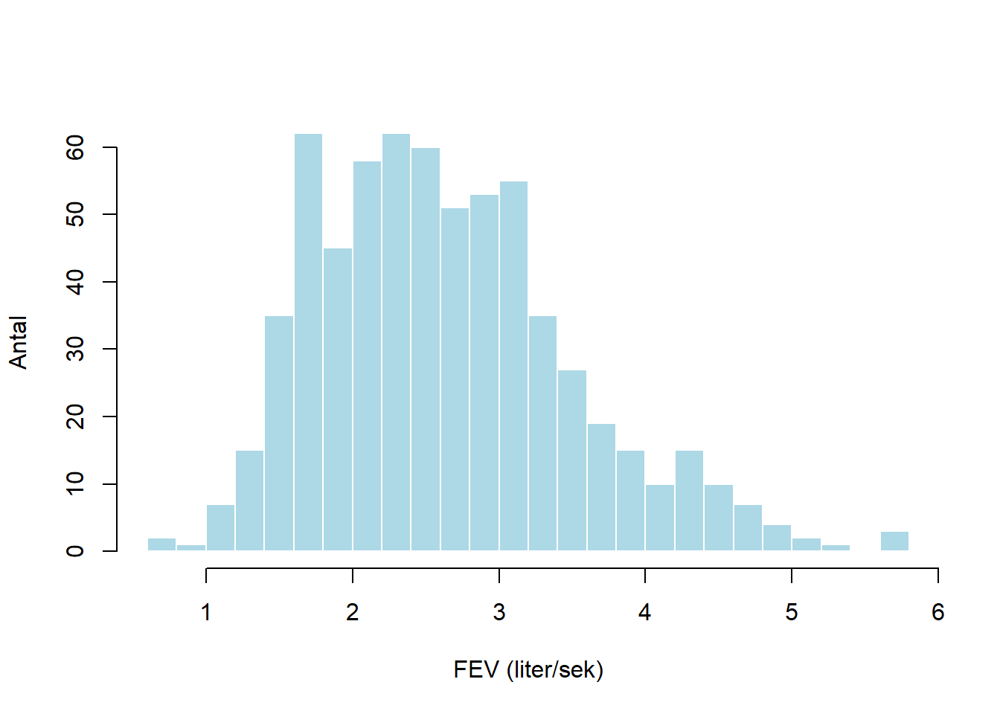
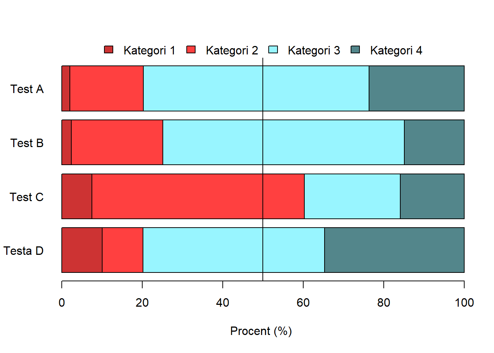
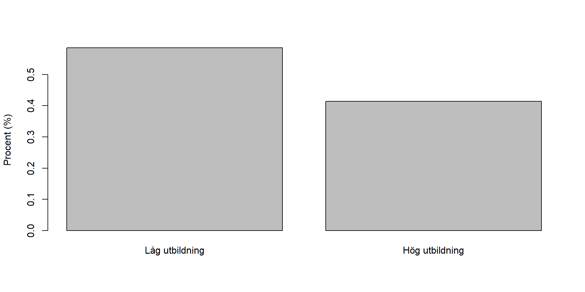
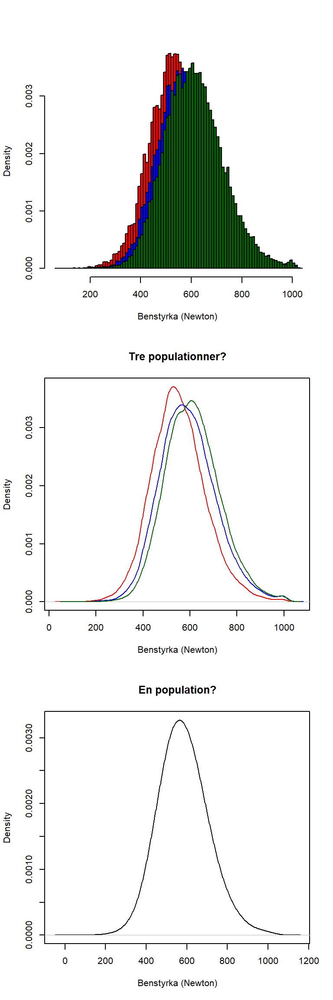

Kapitel 9 Figurer
Att presentera resultat och samband med diskreta variabler och kategorivariabler är en viktig del av att arbeta med
- Frekvenstabeller i R, med och utan paket
- Korstabeller i R, med och utan paket
- Export av tabeller till Word.
9.1 Frekvenstabeller
9.1.1 Frekvenstabeller med table()
# Läs in data. Välj ut födda 1961 och födda 1975
insark <- read.csv2("D:/conscriptiondata.csv")
# Välja ut insark för födda 1961
insark1 <- insark[insark$year == 1961,]
# Välj ut INSARK för födda 1975
insark2 <- insark[insark$year == 1975,]
# Skapa ett dataset av INSARK 1961 och 1975.
insark3 <- rbind(insark1, insark2)
# Skapa nytt radid baserat på delpopulationen 1961 och 1975
insark3$newid <- 1:length(insark3$id) Vi ska nu dra ett urval från INSARK. Anledningen till detta är enbart pedagogiskt, dvs vi får ett datamaterial som översiktlig. I praktiken används den data som tillgänglig! Beträffade funktionen set.seed() så används denna för att ange vilket slumpmässigt urval som dras. Annars erhålls inte samma skattningar som i exemplet. I praktiken vid urvalsdragning används inte set.seed()
n <- 1000
set.seed(12345)
df <- insark3[sample(insark3$newid, n), ]9.2 Stapeldiagram
Ofta presenteras kategoridata i stapeldiagram. Stapeldiagram illustrerar värden som även kan presenteras i en tabell, men som med grafisk presentation blir enklare att avläsa. På grund av relationen mellan stapeldiagram och tabeller används i R ett skapat tabellobjekt i stapeldiagramsfunktionen barplot för att skapa stapeldiagram.
freqtable_psych <- table(df$psych)
proptable_psych <- prop.table(freqtable_psych)
barplot(freqtable_psych)
barplot(proptable_psych)
freqtable_psych_year <- table(factor(df$psych), df$year)
barplot(freqtable_psych_year, beside=TRUE, ylab="Antal")
proptable_psych_year <- 100*prop.table(freqtable_psych_year, margin = 2 )
barplot(proptable_psych_year, beside=TRUE, ylab="Procent (%)")
9.3 Lådagram
Lådagram används främst när vi ska jämföra fördelningar uppdelat på kategorier. Att använda lådagram för en enda variabel är inte optimalt, utan histogram ger då mer information.
Vi vill studera testresultat uppdelat på psykologisk bedämning
boxplot(df$gripstrength~df$psych, xlab="Psykologisk bedömning (1-9)", ylab="Greppstyrka (Newton)") ## Histogram Histogram används för att visualisera en kontinuerlig variabel. Funktionen hist() skapar ett histogram. Nackdelen med histogram är att den är känslig för antalet klasser. Testa därför olika antal klasser.
## Histogram Histogram används för att visualisera en kontinuerlig variabel. Funktionen hist() skapar ett histogram. Nackdelen med histogram är att den är känslig för antalet klasser. Testa därför olika antal klasser.
par(mfrow = c(2,2))
hist(df$gripstrength, xlab="Greppstyrka (Newton)", ylab="Antal", breaks=7, main="7 klasser")
hist(df$gripstrength, xlab="Greppstyrka (Newton)", ylab="Antal", breaks=14, main="14 klasser")
hist(df$gripstrength, xlab="Greppstyrka (Newton)", ylab="Antal", breaks=28, main="28 klasser")
hist(df$gripstrength, xlab="Greppstyrka (Newton)", ylab="Antal", breaks=56, main="56 klasser")
9.4 Spridningsdiagram
Den vanligaste funktionen i R för att skapa figurer är plot. Det finns många argument och i de närmaste obegränsade möjligher att anpassa figurerna
plot(df$legstrength, df$armstrength, xlab = "Benstyrka (Newton)", ylab = "Armstyrka (Newton)")
9.5 Några frekvent förekommande diagram.
I surveydata stöter vi ofta på uppdelade stapeldiagram. Dessa figurer har en inneboende problem eftersom kategorierna storlek kan vara svåra att relatera till varandra. Samtidigt är de en visualisering som gör det enkelt att jämföra fördelningar för många variabler av typen attitydfrågor. För att illustrera kategoriserar vi testresultat på begåvningstesterna i INSARK enligt nedanstående schema.
df$testa_cat <- NA
df$testa_cat[df$testa < 10] <- 1
df$testa_cat[(df$testa >= 10) & (df$testa < 20)] <- 2
df$testa_cat[(df$testa >= 20) & (df$testa < 30)] <- 3
df$testa_cat[(df$testa >= 30)] <- 4
df$testa_cat <- factor(df$testa_cat)
df$testb_cat <- NA
df$testb_cat[df$testb < 10] <- 1
df$testb_cat[(df$testb >= 10) & (df$testb < 20)] <- 2
df$testb_cat[(df$testb >= 20) & (df$testb < 30)] <- 3
df$testb_cat[(df$testb >= 30)] <- 4
df$testb_cat <- factor(df$testb_cat)
df$testc_cat <- NA
df$testc_cat[df$testc < 10] <- 1
df$testc_cat[(df$testc >= 10) & (df$testc < 20)] <- 2
df$testc_cat[(df$testc >= 20) & (df$testc < 30)] <- 3
df$testc_cat[(df$testc >= 30)] <- 4
df$testc_cat <- factor(df$testc_cat)
df$testd_cat <- NA
df$testd_cat[df$testd < 10] <- 1
df$testd_cat[(df$testd >= 10) & (df$testd < 20)] <- 2
df$testd_cat[(df$testd >= 20) & (df$testd < 30)] <- 3
df$testd_cat[(df$testd >= 30)] <- 4
df$testd_cat <- factor(df$testd_cat)
Likert_table <- 100*cbind( prop.table( table( df$testd_cat) ),
prop.table( table( df$testc_cat) ),
prop.table( table( df$testb_cat) ),
prop.table( table( df$testa_cat) ) )
colnames(Likert_table) <- c("Testa D", "Test C", "Test B", "Test A")
bar1 <- barplot(Likert_table, horiz = TRUE,
col = c("brown3", "brown1", "cadetblue1", "cadetblue4"),
xlab="Procent (%)", las=1)
abline(v=50)
legend("top", fill = c("brown3", "brown1", "cadetblue1", "cadetblue4"),
legend = c("Kategori 1", "Kategori 2", "Kategori 3", "Kategori 4"),
horiz = TRUE, inset = c(0,-0.1), xpd = TRUE, bty="n")
barplot(Likert_table, horiz = FALSE, beside=TRUE,
col = c("brown3", "brown1", "cadetblue1", "cadetblue4"),
xlab="Procent (%)", las=1)
legend("top", fill = c("brown3", "brown1", "cadetblue1", "cadetblue4"),
legend = c("Kategori 1", "Kategori 2", "Kategori 3", "Kategori 4"),
horiz = TRUE, inset = c(0,-0.1), xpd = TRUE, bty="n")
Ett alternativ är att använda paketet likert. Notera att som input hanterar den bara faktorer! Dessutom inkluderas inte variabler i form av en matris. Funktionen har mycket
install.packages("likert")
library("likert")
> Loading required package: ggplot2
> Loading required package: xtable
likertdata <- likert(data.frame(df$testa_cat, df$testb_cat, df$testc_cat, df$testd_cat))
plot(likertdata)
?likert
> starting httpd help server ...
> done